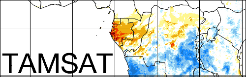

TAMSAT ALERT
Location
Latitude
Longitude
Time
Forecast Date
Period of interest start
Period of interest end
Metric
Cumulative Rainfall
Meteorological Forecast
Forecast period start
Forecast period end
Tercile Probabilities
Probability distribution for percentile calculations
Normal
ECDF
User details
Email address
Job/Group Reference